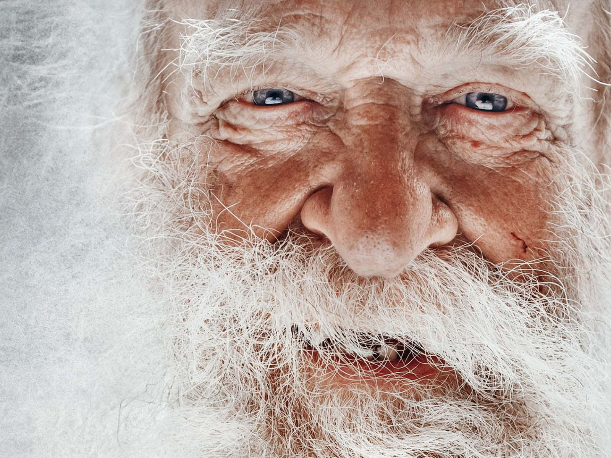
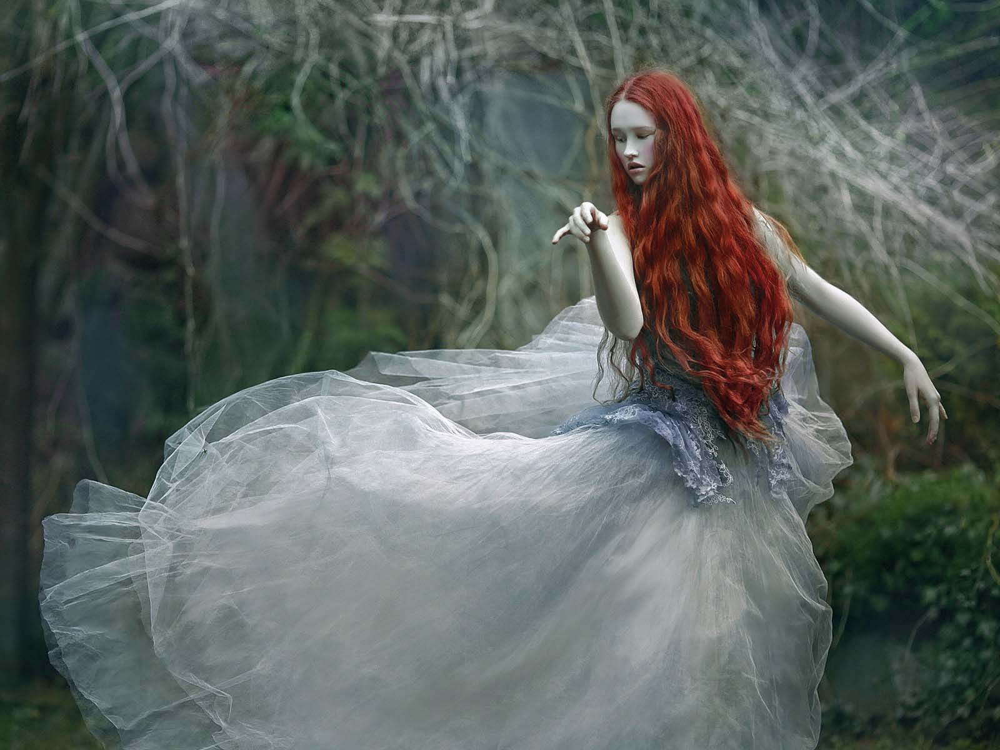
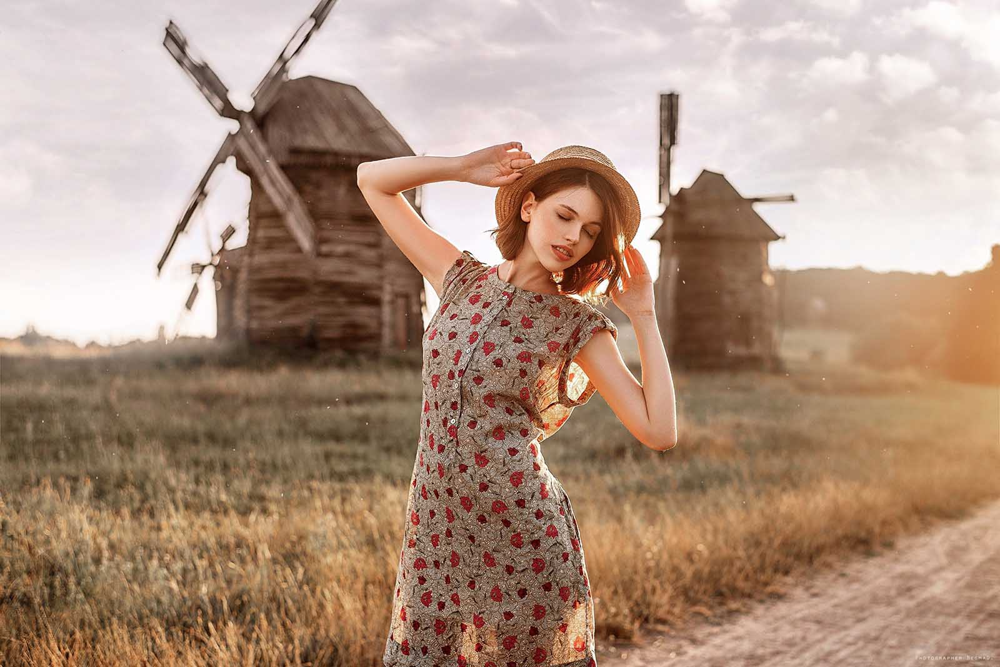
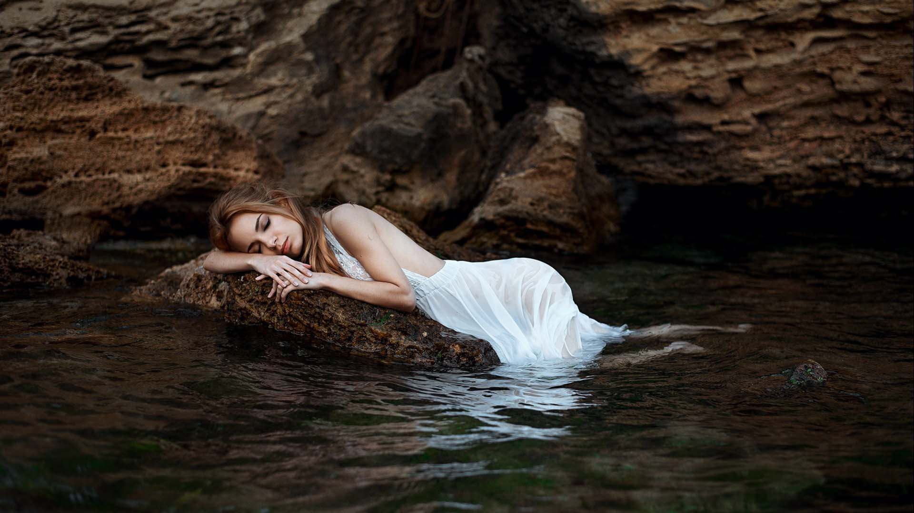
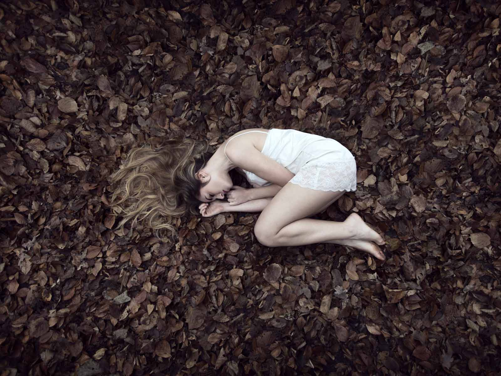
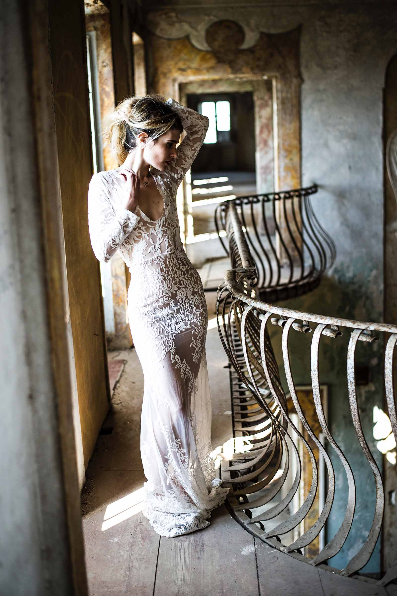

Entrar
Início
Empresas
Quero Educação
Acompanhe o dia a dia mostrada pelos funcionários.
Show All
Fashion
Portraits
Black & White
Outdoor

49
The Old Man Dreams
Outdoor
85
These Wonderful Freckles
Black & White

7
Paris Fashion Week
Fashion

12
Afternoon Photoshoot
Outdoor
96
Sit Back and Relax
Portraits

56
Something In The Water vol.2
Fashion
,
Outdoor

53
Autumn Nights
Outdoor
71
Beauty & Fashion
Fashion
68
No Colors This Time
Black & White
32
Monday's Monochromes
Outdoor
13
Something In The Water
Fashion
,
Portraits

11
Beautiful Bride
Outdoor
,
Fashion
7
My Super Awesome Album
Outdoor
,
Fashion
23
One Day Shoot With Ordinary People
Portraits
6
The Beauty of Nature
Outdoor
View More